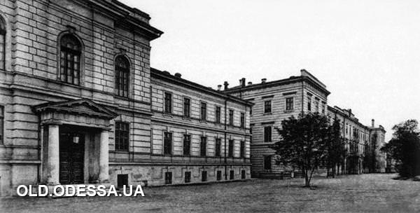

ЗДАНИЯ
Здания, относящиеся к Одесскому политехническому институту
В 1830 году был выделен участок за чертой Порто-Франко, где по проекту Боффо вырос дом, впоследствии перестроен в большую по размерам. В 1859 году для Института благородных девиц сооружение было перестроено по проекту архитектора А. Шашина.
Ул. Старопортофранковская, 28 в 1910-х годах - в ул. Внешняя, 34, в 1920-х гг. ул. Мечникова, 34.
C 1920-1930 гг.. по этому адресу размещался Одесский политехнический институт
На базе судостроительного факультета ОПИ в 1930 году сформировался и сейчас существует по этому адресу Одесский институт инженеров водного транспорта (ныне ОНМУ). Николаевский корабельно-строительный институт (ныне ТКУ им. Адмирала Макарова) также сформирован на базе этого же факультета. С ОПИ были переведены в сформированы учебные заведения студенты старших курсов соответствующих специальностей и преподаватели.

В доме «Трудолюбия» 1917-1918 гг. жил один из организаторов рабочего движения в г. Одесса А.В. Трофимов, известный как «дед Трофим» и размещался профсоюз металлистов и штаб Красной гвардии Пересыпского района города Одессы. «Дед Трофим» принимал активное участие в развитии ОПИ во времена Советского правления. Также здесь находилась технически-производственная база для студентов ОПИ. Ул. Одария, 9.